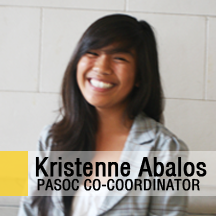
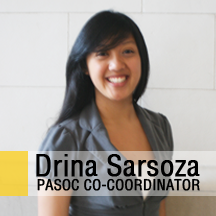
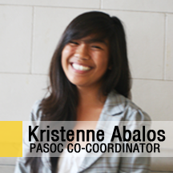
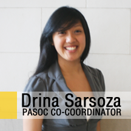

Pilipino American Student Orientation Coordinators
 
| Name: | Janelle Anne Bautista |
| Year: | 3rd |
| What are you studying?: | Peace & Conflict Studies and Political Science Major |
| Hometown: | San Diego, California |
| Contact Information: | passpasoc@gmail.com |
 
| Name: | Janelle Anne Bautista |
| Year: | 3rd |
| What are you studying?: | Peace & Conflict Studies and Political Science Major |
| Hometown: | San Diego, California |
| Contact Information: | passpasoc@gmail.com |
Tell Us About Your Position
Pilipino American Student Orientation Class (PASOC) [DeCal] - PASOC was founded in 1993 in response to a dramatic decline in the retention rates of Pilipino American students at Cal. The class aims to help freshmen and transfer students transition from high school or community college to student life at Cal.
PASOC Workshops - Held sporadically over the course of the spring semester. This year, I plan to collaborate with some folks from the various Pilipino Organizations on campus in facilitating these workshops.
Ultimate Class Challenge (UCC) - At the end of each spring semester, the Pilipino community comes together for some inter-class competition.
What part of PASS Hystory or Pilipin@ Hystory would you like to observe or experience?
I'd like to go back about 4-6 years ago when my Kuya Matt and Kuya Nate (through PAA's KAA Mentorship Program) were at their primes here at Cal. I've heard of how much they both impacted our community, but I'd love to experience it for myself.
Fun Facts
1. My brother (Ronell) and I were both given names that rhyme with my dad’s name (Arnel).
2. I named my car after Princess Leia from Star Wars.
3. I really want to travel the world someday, and I will. I plan on studying abroad in Costa Rica and/or Kenya next summer for their peace-building programs, and go backpacking across Southeast Asia and Europe after I graduate.